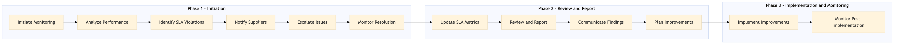

This process document outlines the monitoring and performance management of supplier SLAs for OTA (Online Travel Agency) systems and TMC (Travel Management Company) systems, focusing on activities cars and ancillaries.
| Trigger | Monthly review cycle or upon detection of SLA violations |
| Outcome | Ensured compliance with SLAs, identified and resolved issues promptly, and maintained high supplier performance levels. |
| Systems | AWS SageMaker Snowflake Tableau Salesforce Partner Central Email |

Click to enlarge
| Step | Name & Pain Point | Role | System | Input | Output | KPI | Flags |
|---|---|---|---|---|---|---|---|
| 1.1 | Initiate Monitoring Data integration challenges between systems | SLA Manager | AWS SageMaker, Snowflake | Supplier SLA data, historical performance metrics | Monitoring dashboard with KPIs | 95% SLA compliance rate | ⚠ Exception |
| 1.2 | Analyze Performance Real-time data processing delays | SLA Analyst | Tableau, Salesforce | Monitoring dashboard data | Performance report with insights | 90% on-time delivery rate | ⚠ Exception |
| 1.3 | Identify SLA Violations Automated detection system accuracy | SLA Analyst | Tableau, Salesforce | Performance report | List of SLA violations | <5% SLA violation rate | ◆ Decision |
| 1.4 | Notify Suppliers Supplier contact information accuracy | Supplier Relations Manager | Email, Partner Central | List of SLA violations | Notification emails to suppliers | 100% notification rate within 24 hours | ⚠ Exception |
| 1.5 | Escalate Issues Supplier response time | SLA Manager | Salesforce, Partner Central | Notification emails to suppliers | Escalation tickets for unresolved issues | <2% unresolved SLA violations | ◆ Decision |
| 1.6 | Monitor Resolution Supplier resolution process efficiency | SLA Analyst | Salesforce, Partner Central | Escalation tickets for unresolved issues | Resolution status updates | 95% resolution rate within 7 days | ⚠ Exception |
| 1.7 | Update SLA Metrics Data consistency across systems | SLA Analyst | AWS SageMaker, Snowflake | Resolution status updates | Updated monitoring dashboard with KPIs | 90% on-time delivery rate | ⚠ Exception |
| 1.8 | Review and Report Reporting accuracy and completeness | SLA Manager | Tableau, Salesforce | Updated monitoring dashboard with KPIs | Monthly SLA performance report | 95% SLA compliance rate | ⚠ Exception |
| 1.9 | Communicate Findings Stakeholder engagement and feedback | SLA Manager | Email, Salesforce | Monthly SLA performance report | Communication to stakeholders | 100% communication rate within 3 days | ⚠ Exception |
| 1.10 | Plan Improvements Resource allocation and prioritization | SLA Manager | Salesforce, Partner Central | Communication to stakeholders | Improvement plan for identified areas | <5% SLA violation rate | ◆ Decision |
| 1.11 | Implement Improvements Supplier cooperation and buy-in | SLA Analyst, Supplier Relations Manager | Salesforce, Partner Central | Improvement plan for identified areas | Implementation of improvements | 90% implementation rate within 30 days | ⚠ Exception |
| 1.12 | Monitor Post-Implementation Continuous improvement and adaptation | SLA Analyst | AWS SageMaker, Snowflake | Implementation of improvements | Post-implementation monitoring dashboard with KPIs | 95% SLA compliance rate | ⚠ Exception |